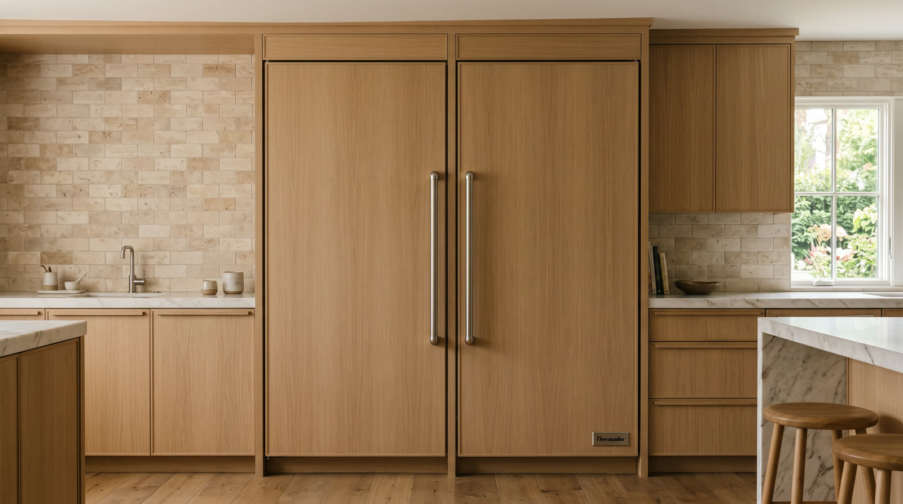

Thermador refrigeration
Freedom columns are built into the house itself. Servicing them well is a specialty, and it is ours.

Thermador Freedom columns are refrigeration as architecture. Full height refrigerator columns, freezer columns, and panel ready faces that vanish into cabinetry. That integration is the appeal, and it is also why generalist repair falls short here. Reaching the machine without harming the millwork around it is half the job.
We service columns as a dedicated discipline. Panel removal and reinstallation without a blemish, door alignment restored to factory reveal lines, sealed system and airflow work on both refrigerator and freezer columns, and temperature verification zone by zone before the panels go back on. The kitchen looks untouched. The columns simply work again.
Each column runs its own system, so one failing while its twin runs perfectly is normal, not strange. We diagnose the sick one and health check its neighbor while we are there.
Column doors carry heavy panels, and hinges drift under that load until gaps go uneven and seals suffer. Realignment is precision work worth doing right.
Sweating faces or damp edges mean a seal, heater, or humidity problem asking for attention before the cabinetry pays for it.
Defrost faults show up fast in a tall single purpose cavity. Frost patterns tell us where to look first.
Fans and compressors speak up before they fail. New sounds from the top or base of a column deserve a listen from someone who knows the vocabulary.
Yes, and we put them back exactly as found. Panel handling is part of the service, done with padding and patience, not pried at with a screwdriver.
They are independent machines sharing a wall. One failing says nothing about the other, but while we repair the sick one, the healthy one gets a quick inspection on the house.
We align to the factory reveal specification, the same even sightlines the installer chased on day one. It is fussy work and we happen to enjoy it.
One phone call and the problem becomes ours. Open daily, 7am to 7pm.
First callers get first pick of the same day windows. The $89 diagnostic credits toward the repair, so the answer itself ends up costing nothing.